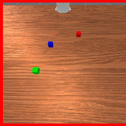
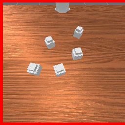
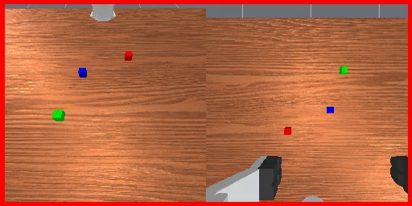
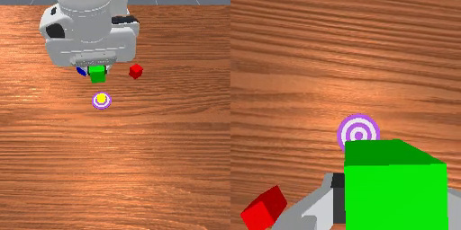
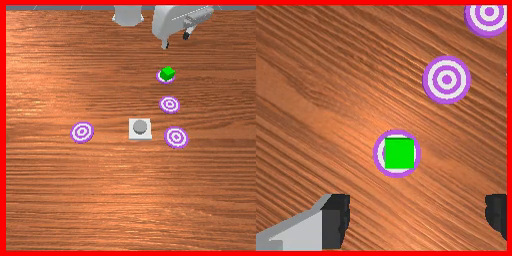
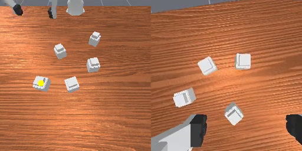
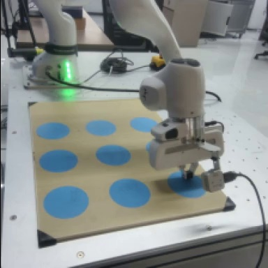

Visual Buffer
Recent frames arrive as a stream. The buffer holds enough context for the next update, then clears when evidence is committed.
observe compress

Streaming reasoning for executable memory in robot control
PAL turns a stream of visual evidence into semantic events and a future-ready subtask list, so a robot can use what it saw before it needs to act.
01 / The problem
Long-horizon manipulation often hides the evidence that determines the next action. A cube is covered early in a video, a pattern is demonstrated once, or progress must be counted across repeated picks.
A short visual window can execute a motion. It cannot reliably recover an event that has already left the frame.
PAL makes future-relevant evidence executable before the moment of action arrives.


VideoUnmask · simulation · same episode, frames 0 and 32
02 / The idea
PAL separates recent pixels, remembered events, and actions that are ready to run. Each layer has a different time scale and a different job.
Recent frames arrive as a stream. The buffer holds enough context for the next update, then clears when evidence is committed.
Task-relevant changes become compact natural-language events: what moved, where it ended, and why it matters later.
Future subtasks are appended before execution. The low-level VLA selects the next item without searching the whole visual history.
03 / Interactive walkthrough
In VideoUnmask, the green cube disappears under a container. Its remembered position determines what the robot must lift.

The green cube is visible before the containers cover it.The conditioning video reveals the cube's identity and position before that evidence becomes hidden.
VideoUnmask · simulation · episode 2 · camera crops; memory and action labels abbreviated from the rollout.
04 / Evidence
Across memory-dependent RoboMME tasks, PAL improves most when the relevant evidence arrives long before execution.
| Method | Short-video | Long-video | In-context | Episode-start |
|---|---|---|---|---|
| FrameSamp-Modul | 41.87% | 46.00% | 27.05% | 72.96% |
| MemER | 37.52% | 28.00% | 41.00% | 65.11% |
| PAL | 45.26% | 81.60% | 46.20% | 77.33% |
Dense supervision teaches updates; task-grounded self-labeling refines when to commit them. Both stages contribute to the final result.
Dense supervision alone can update the executable list too frequently.
Sparse supervision can miss updates needed across a long video.
Verified self-labels improve the timing and reliability of memory updates.
04a / Simulation evidence
Three successful RoboMME rollouts from the main evaluation. Paired camera views show the evidence the robot observes and the actions it takes.

Pick and place the green cube three times, then press the stop button.
simulation · episode 26 · successful rolloutNo executable subtask yet.

Return the green cube to the second target visited in the demonstration.
simulation · episode 21 · successful rolloutNo executable subtask yet.

Lift the container hiding the green cube using its remembered position.
simulation · episode 2 · successful rolloutNo executable subtask yet.
Event memory and subtasks abbreviated from each rollout's prediction and execution logs.
05 / Real world
Four tasks test different kinds of long-horizon recall: count progress, recover a hidden layout, remember an earlier placement, and reproduce a dense pattern.
Complete recorded demos at 4× source playback. The success rates summarize the evaluation trials.
